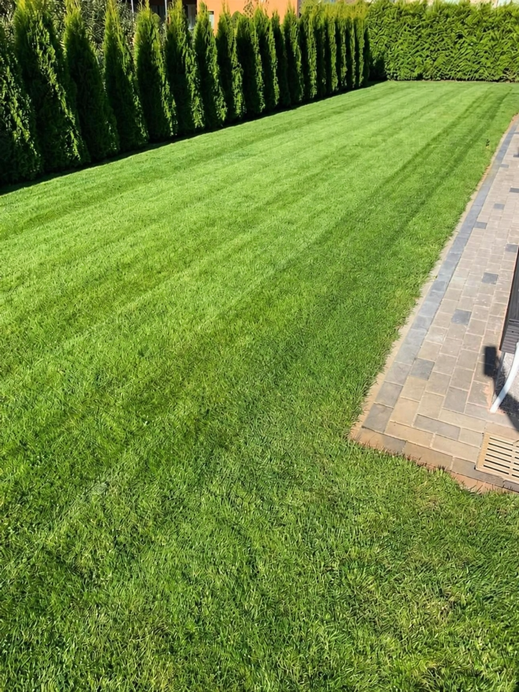
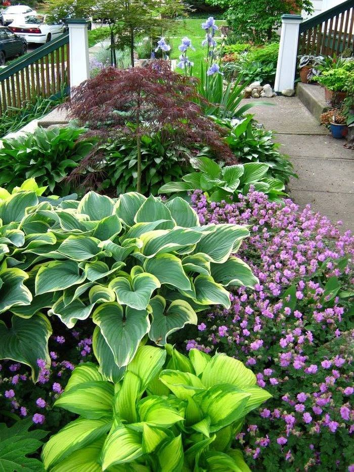
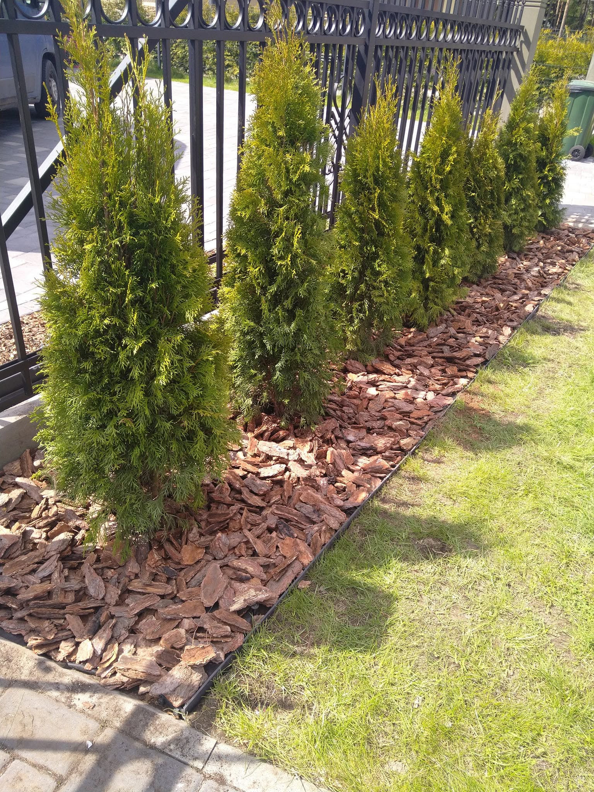
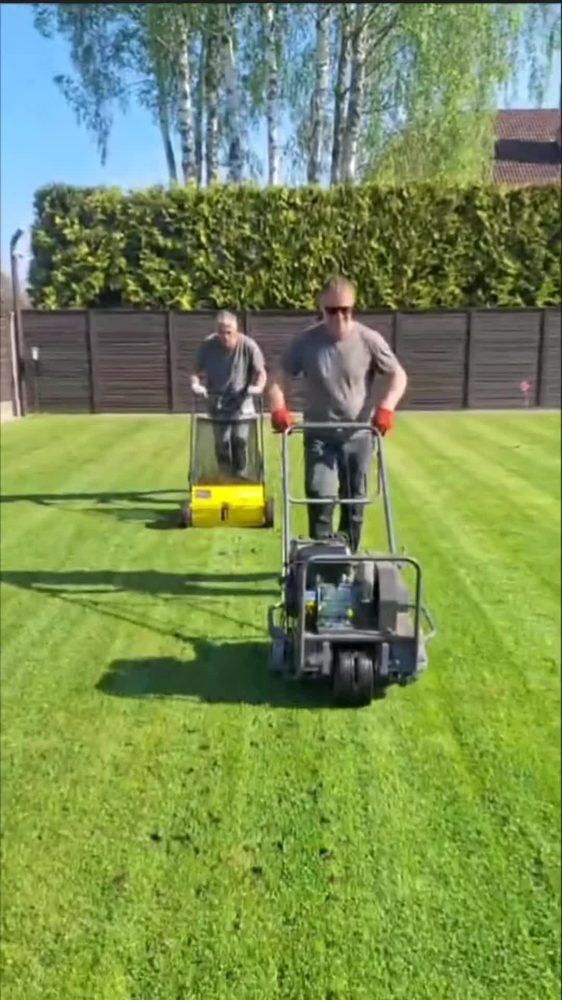

Real client project · Landscape services
A 30-second promotional film for an operating landscaping company — shaped around real projects, practical services and a more coherent visual identity.

The brief
The company already had a useful archive of completed gardens, planting, lawn care and on-site work. The challenge was that the material had been captured at different times, on different devices and in several formats.
The campaign needed to present flower beds, thuja planting, irrigation and lawn aeration as one credible service — with beauty leading the story and technical work supporting it.
Final film · 00:30
The structure moves from aspiration to proof: finished gardens first, then services and people at work, followed by a branded vehicle and a direct contact frame.
English voiceover and a restrained rhythmic soundtrack keep the film informative without turning it into a list of services.




My contribution
Production approach
All gardens and on-site work shown in the campaign come from the client's own project archive. The editing improves coherence and presentation without inventing completed work.
Adaptable service
A calm premium film, a brighter social advert or a direct service-led campaign can all use the same disciplined process: understand the audience, find the strongest material and give every creative choice a purpose.
Turning existing photography and video into a coherent promotional story.
Concept, structure, copy, pacing, music, voice and final presentation.
Adaptation for English, German, Latvian and Russian, with additional languages available.
Vertical, horizontal and caption-led versions shaped for the intended channel.